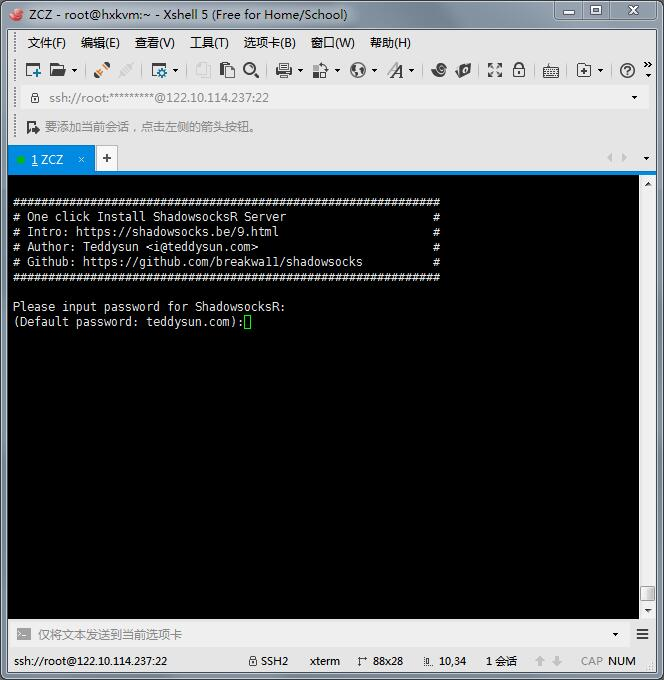
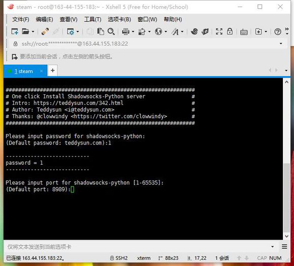
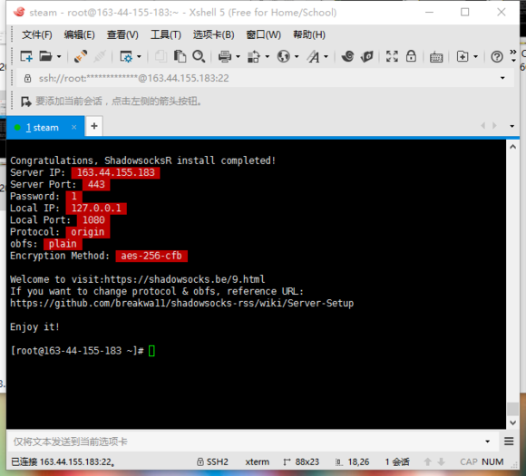
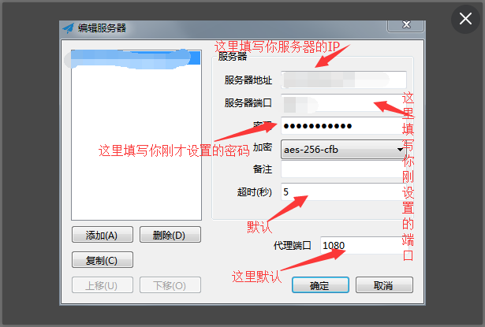

1.首先我们需要一个适合自己的vps，按照自己现在的需求购买即可，安装好centos系统。
2.使用xshell5连接已经买好的vps。
3.开始搭建服务端的ss
输入以下代码回车升级Linux所有包
1
yum update -y
安装git
1
yum -y install wget nano git
安装ss
1
2
3
41. wget --no-check-certificate
https://raw.githubusercontent.com/teddysun/shadowsocks_install/master/shadowsocksR.sh
2. chmod +x shadowsocksR.sh
3. ./shadowsocksR.sh 2>&1 | tee shadowsocksR.log然后回车，会出现下图

- 根据上图提示，输入密码，这是等下客户端连接的密码，设置完回车

- 接下来输入端口（1-65535），这个是连接用的端口，随便输个445，然后回车，等程序执行完毕

看到这里服务端的搭建就大功告成了！（如果连接不上，建议关闭防火墙）
卸载方法
运行以下命令：1
./shadowsocksR.sh uninstall
安装完成后即已后台启动 ShadowsocksR ，运行：
1 | /etc/init.d/shadowsocks status |
可以查看 ShadowsocksR 进程是否已经启动。
本脚本安装完成后，已将 ShadowsocksR 自动加入开机自启动。
使用命令1
2
3
4启动：/etc/init.d/shadowsocks start
停止：/etc/init.d/shadowsocks stop
重启：/etc/init.d/shadowsocks restart
状态：/etc/init.d/shadowsocks status
1 | 配置文件路径：/etc/shadowsocks.json |
多用户配置示例
1 | { |
4.SS客户端的基本使用
- 上网下载ss客户端，然后点击运行
- 在任务栏找到 Shadowsocks 图标
- 在服务器 菜单添加多个服务器
- 选择 启用系统代理 来启用系统代理。请禁用浏览器里的代理插件，或把它们设置为使用系统代理。
- 除了设为系统代理，你也可以直接自己配置浏览器代理。在 SwitchyOmega 中把代理设置为 SOCKS5 或 HTTP 的 127.0.0.1:1080。这个 1080 端口可以在服务器设置中设置。
图解：
